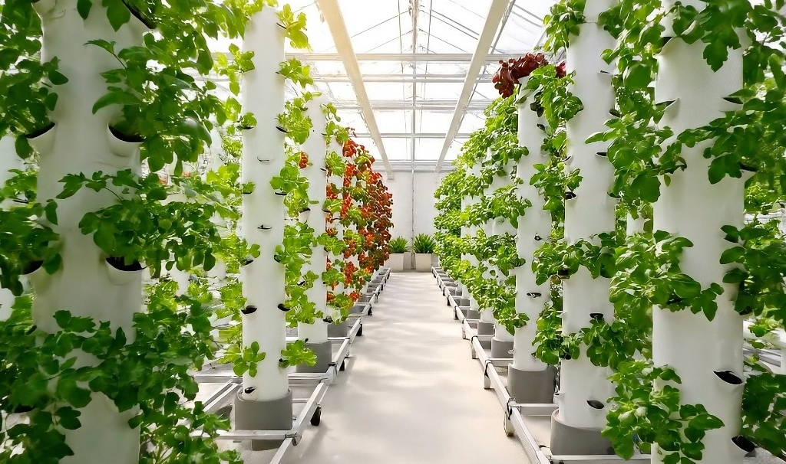
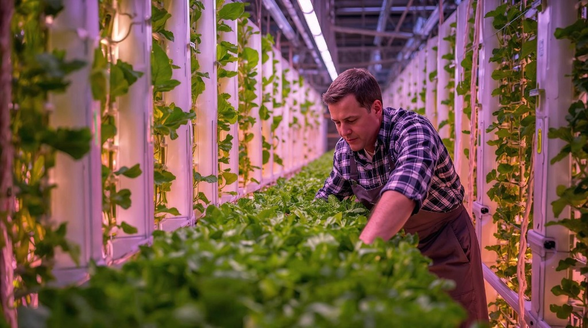
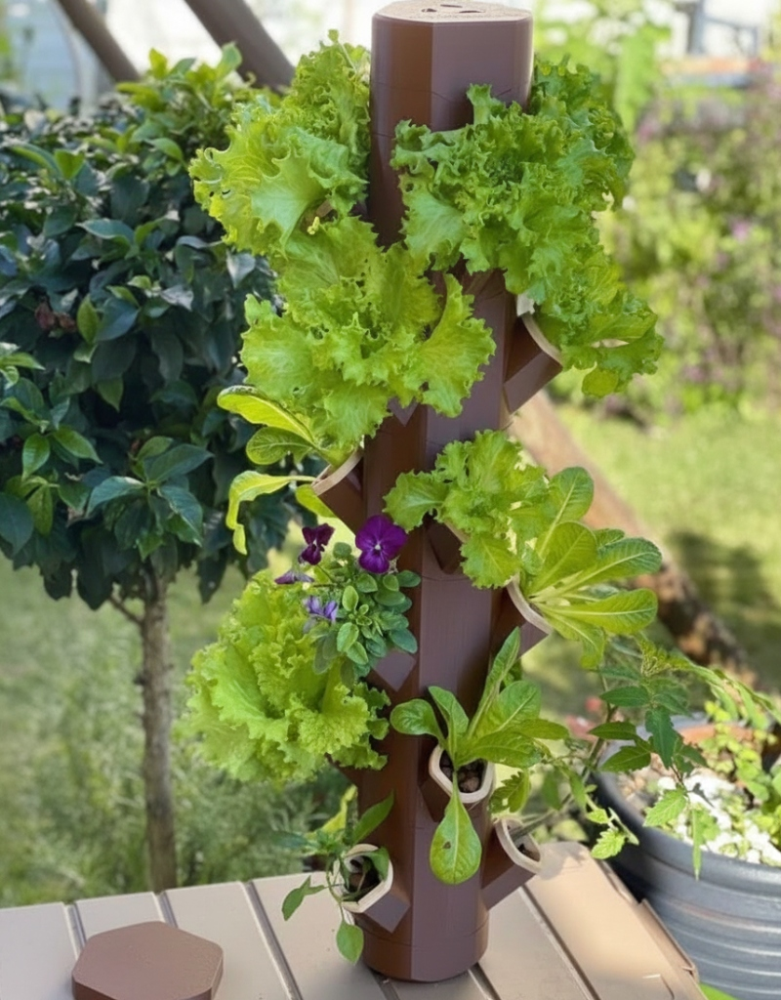
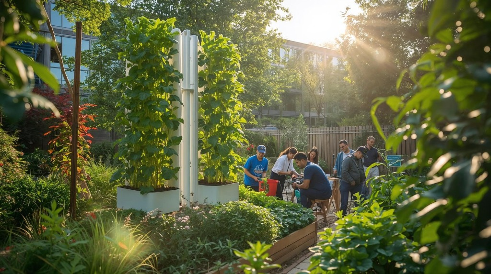
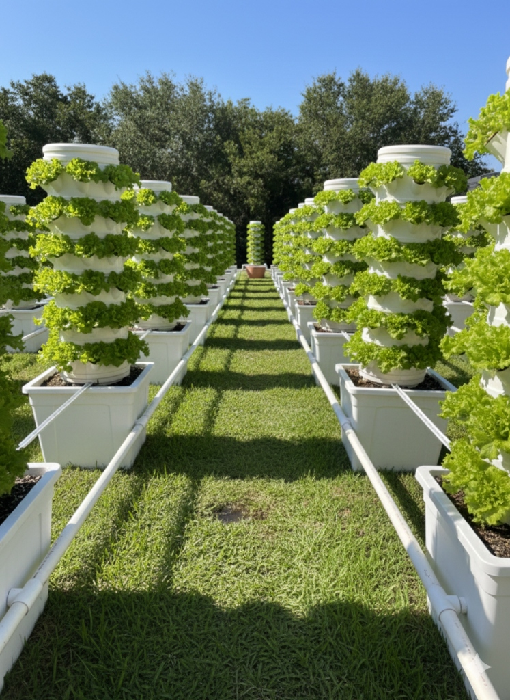
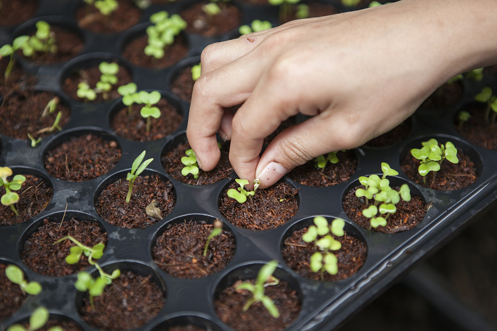

The Future of Food,
Vertical and Local.
MyFanjan® deploys innovative hydroponic vertical farming solutions to transform our tropical territories into models of resilience and sustainability.
Reunion Island still imports most of its food.
Our vision: achieve food sovereignty through connected vertical hydroponic farming — producing locally, year-round, complementing traditional agriculture.
Read our visionLess Dependency
Goal: –30% vegetable imports in 10 years.
More Jobs
Thousands of young farmers trained in life technologies.
Eat Better
Local access to fresh, pesticide-free vegetables, all year round.
Water Consumption (L/kg produced)
Hydroponics saves up to 90% water compared to traditional agriculture.
An offer for every player in the territory.

Pedagogical & Urban Projects
Greening spaces, raising public awareness, enhancing the brand image of public institutions.
Learn more →
Intensive Production Units
Increased profitability, working ergonomics, optimized resource management for professionals.
Learn more →
Home Systems
Direct access to ultra-fresh, healthy, and local food on your balcony or terrace.
Learn more →
Grow Your CSR
A turnkey vertical vegetable garden to install on-site.
Learn more →
Vertical Performance for Life.
Hydroponic Cultivation
A closed-loop system where nutrient-rich water circulates with precision, eliminating the need for arable land and heavy chemical treatments.
Land Optimization
Produce up to 40 times more per sqm thanks to verticality. An ideal solution for densifying production in restricted urban areas.
Tropical Resilience
Systems specifically designed to withstand intense heat and humidity, ensuring stable production year-round.
The MyFanjan® Guide
Discover our Complete Guide for Hydroponics and Aquaponics. A collection of resources, tutorials, and expert advice to successfully master your production, accessible to everyone.
